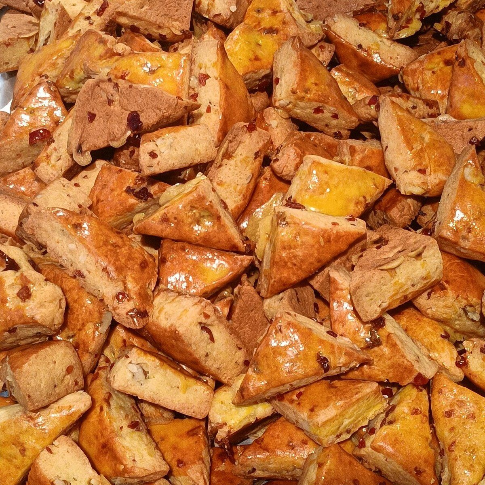
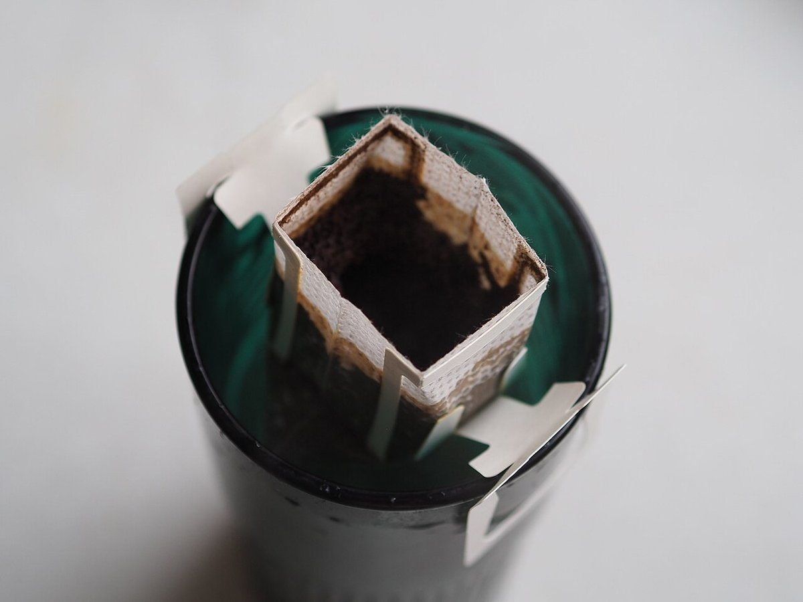
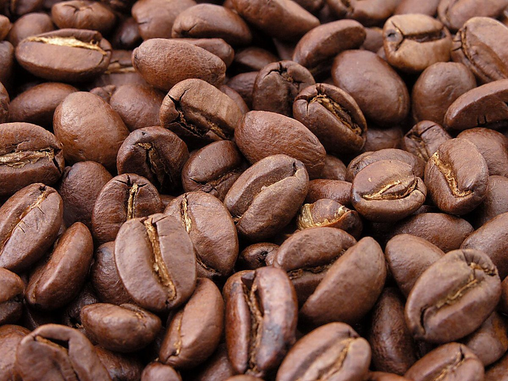

メニュー
メニュー・価格は準備中です。お電話またはInstagramでお問い合わせください。




メニュー(準備中)
- 品名 準備中価格 準備中
- 品名 準備中価格 準備中
- 品名 準備中価格 準備中
掲載できる内容が確認でき次第、こちらに追記します。
ご利用にあたって
- アレルギー対応
- 準備中です。ご心配な点は、お電話でお問い合わせください。
- お支払い方法
- 準備中です。
- テイクアウト
- 準備中です。
上記以外のご質問も、お電話またはInstagramでお受けすることを想定しています。